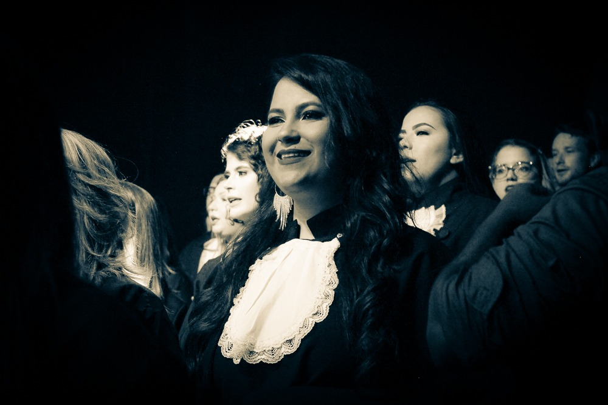
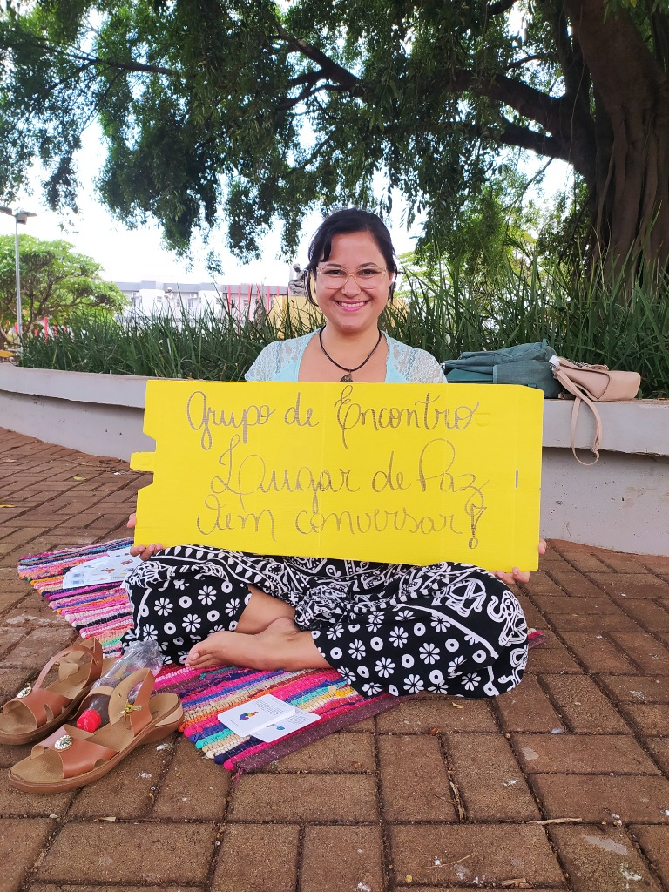
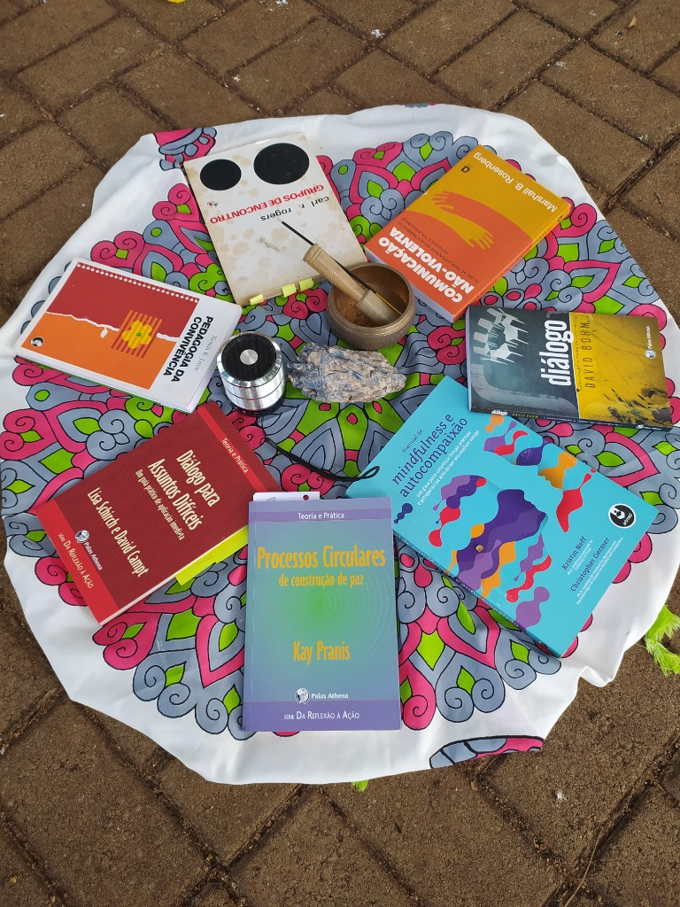
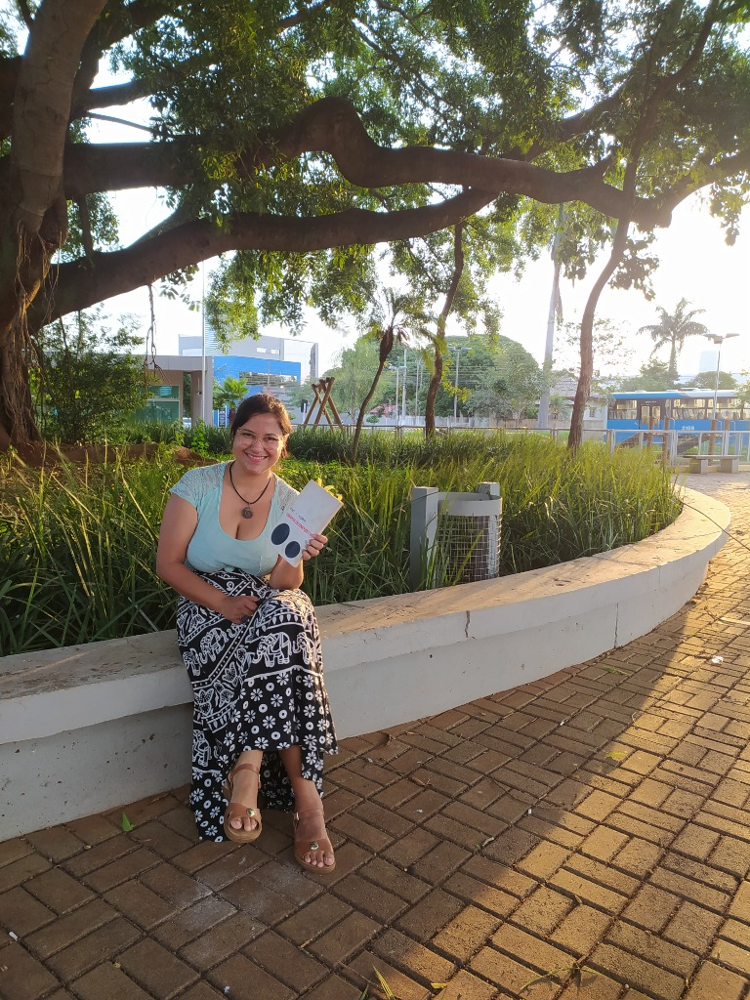

Quem é Heblisa Mello
Trajetória, especializações e atuação na Psicologia Humanista e Desenvolvimento Humano.
Trajetória Profissional
Um olhar sobre os marcos que construíram minha atuação clínica e acadêmica.

Graduação em Psicologia
Centro Universitário da Grande Dourados (UNIGRAN). Base fundamental para o entendimento da psique humana e início do encantamento pela abordagem humanista.



Grupo de Encontros Lugar de Paz
Facilitadora de grupos de encontro baseados na Abordagem Centrada na Pessoa, promovendo espaços de escuta, empatia e construção de paz em ambientes coletivos.
MBA em Gestão de Pessoas
Coaching e Liderança (Faculdade IMES). Foco no desenvolvimento humano dentro das organizações e estratégias de liderança humanizada.
Neurociência & Comunicação
Especialização em Neurociência e Desenvolvimento Humano (Centro de Mediadores). Aprofundamento nos processos biológicos e comunicativos da emoção.
Cultura de Paz & CNV
Formações contínuas em Comunicação Não-Violenta, Teoria U, Ecopsicologia e Facilitação de Círculos de Construção de Paz.
Atuação Clínica Humanista
Foco em psicoterapia para ansiedade, relacionamentos e autoconhecimento, unindo a escuta empática às ferramentas de desenvolvimento humano.
Destaques de Atuação
O cuidado com a saúde mental ultrapassa as paredes do consultório. Minha trajetória é marcada pelo compromisso com a ética, o sigilo e o acolhimento autêntico.
- Atendimento clínico para adolescentes e adultos.
- Experiência em Facilitação de Grupos e Desenvolvimento Humano.
- Forte ênfase em métodos colaborativos e Comunicação Não-violenta.